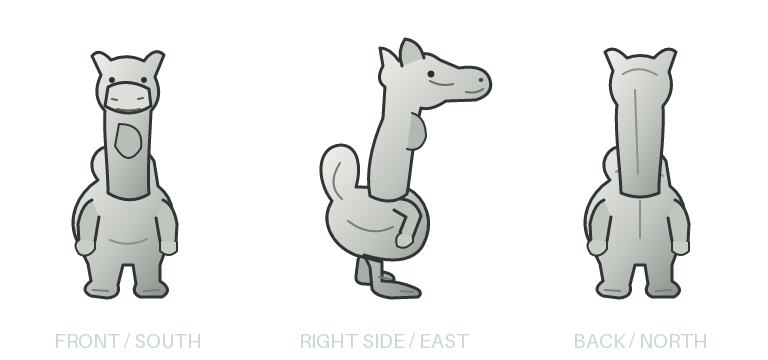

The front design anchored the side and back proposals. We reviewed the anatomy, corrected the hump interpretation and refined the composed turnaround. This result was selected by the user. The tiny Qud icon does not settle every surface: this is a faithful-minded interpretation, not a literal upscale or canonical anatomy reference.
The browser supplies the labels and magnification. Generated pixels and alpha remain unchanged. View registration and refined body/head segmentation are still pending; source masks below describe the constructed input, not the refined output. No new clothing or native integration is claimed for this base.
The supplied clothed refinement image was not used. We first constructed the unclothed front, then tested front-guided side/back generation. An earlier independently authored side view reused the frontal leg stance and was superseded.

Selected unmodified output · Front-to-views prompt · Composed refinement prompt · Provenance and limits · Source masks and registration